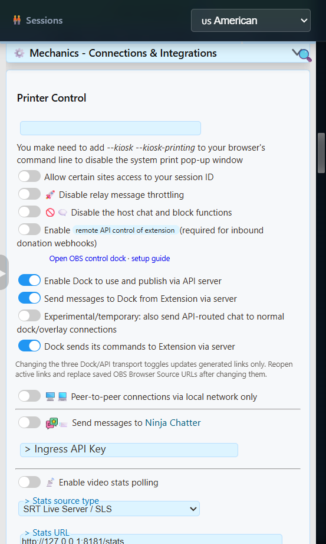
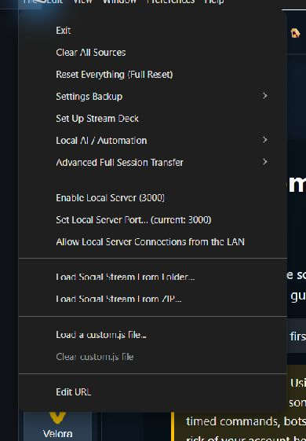

Quel mode utiliser ?
La plupart des utilisateurs ne devraient pas activer Local Server. L'extension Chrome et les configurations SSApp normales peuvent utiliser le service WebSocket hébergé de Social Stream en activant les options de routage ci-dessous. Local Server est un remplacement avancé du relais hébergé.
| Mode | Quand l'utiliser |
|---|---|
| WebRTC normal | Conservez les valeurs par défaut lorsque votre Dock et vos incrustations se connectent déjà de manière fiable. Aucune option serveur n'est nécessaire. |
| WebSocket hébergé | Le repli serveur normal pour l'extension Chrome ou SSApp. Il utilise le relais public hébergé de Social Stream et ne nécessite pas Fichier > Activer le serveur local (File > Enable Local Server). |
| Serveur local (Local Server) | Usage avancé uniquement : hébergez vous-même le relais sur l'ordinateur SSApp ou utilisez-le lorsqu'un réseau régional, d'entreprise ou restreint ne peut pas atteindre le service WebSocket public hébergé. |
Activer le mode WebSocket hébergé
- Ouvrez la fenêtre de l'extension Social Stream Ninja ou le panneau des paramètres dans SSApp.
- Ouvrir Paramètres et outils globaux > Mécanismes - Connexions et intégrations (Global settings and tools > Mechanics - Connections & Integrations).
- Activer Autoriser le Dock à utiliser et publier via le serveur API (Enable Dock to use and publish via API server). Cela ajoute
serveraux liens générés pris en charge. - Activer Envoyer les messages de l'extension vers le Dock via le serveur. Cela ajoute
server2et achemine le chat capturé vers le Dock. - Si vous souhaitez des réponses ou des commandes de modération et de sources allant du Dock vers l'extension, activez Le Dock envoie ses commandes à l'extension via le serveur. Cela ajoute
server3. - Laissez Expérimental/temporaire : envoyer aussi le chat routé par API aux connexions normales du Dock/des incrustations désactivé sauf si vous testez précisément la livraison additive.
- Laissez Connexions pair à pair via le réseau local uniquement désactivé pour la configuration hébergée normale.
- Copiez de nouveaux liens de Dock et d'incrustation, remplacez les anciennes URL enregistrées dans OBS et rouvrez les pages déjà en cours d'exécution.

server et server2; ajoutez server3 pour les réponses et commandes.Si le Dock propose Activer le repli serveur, ce raccourci active ensemble les routes de repli du chat et des commandes. Ouvrez cette section des paramètres et vérifiez que le premier Autoriser le Dock à utiliser et publier via le serveur API (Enable Dock to use and publish via API server) interrupteur est aussi activé pour la configuration complète à trois routes.
Rôle des trois options serveur
| Option | Direction | Utilisez |
|---|---|---|
server | Route Dock/API | Permet aux pages Dock et API prises en charge d'utiliser la route du serveur hébergé et d'y publier. |
server2 | De l'extension vers le Dock | Envoie les messages de chat capturés au Dock via le serveur hébergé. |
server3 | Du Dock vers l'extension | Renvoie les réponses et commandes prises en charge vers l'extension. Facultatif pour un Dock en lecture seule. |
Un lien de Dock bidirectionnel généré peut contenir :
https://socialstream.ninja/dock.html?session=YOUR_SESSION_ID&server&server2&server3Copiez les liens générés plutôt que d'ajouter manuellement des options à chaque page. La prise en charge du routage diffère entre le Dock, les incrustations, les alertes, les jeux et les pages utilitaires.
Avancé : utiliser le serveur local de SSApp
Le serveur local remplace le point de terminaison WebSocket public hébergé par un relais exécuté dans l'application de bureau Social Stream Ninja. Utilisez-le lorsque vous souhaitez volontairement héberger le relais ou que le serveur public est inaccessible depuis votre réseau ou région.
C'est un relais, pas un hébergeur de site web. Il ne sert pas l'interface SSN, ne capture pas à lui seul le chat des plateformes et n'expose pas l'API de contrôle local.
- Effectuez la configuration des options de routage hébergé ci-dessus. Les mêmes
server,server2, et éventuellementserver3instructions s'appliquent toujours. - Dans SSApp, choisissez Fichier > Activer le serveur local (File > Enable Local Server). Le menu affiche le port sélectionné.
- Copiez de nouveaux liens de Dock et d'incrustation. SSApp ajoute
localserveret la valeur active delocalserverportlorsque c'est pris en charge. - Remplacez les anciennes URL enregistrées dans OBS et rouvrez les pages actives.
- Envoyez un faux message de test, puis testez une réponse ou une commande du Dock si
server3est activé.

Les nouvelles installations utilisent normalement 127.0.0.1:3003. Une installation mise à niveau qui utilisait déjà le port 3000 peut le conserver. Un lien local de Dock bidirectionnel généré peut contenir :
https://socialstream.ninja/dock.html?session=YOUR_SESSION_ID&server&server2&server3&localserver&localserverport=3003Pour les mini-jeux, activez Envoyer les messages de l'extension vers le Dock via le serveur et copiez le lien du jeu après l'avoir sélectionné. Les liens locaux de jeux avec server2 reçoivent le chat capturé directement depuis SSApp, même si aucun Dock n'est ouvert. Changer de jeu conserve le mode local et le port.
L'exemple API et l'outil de messages de test utilisent WebSocket en mode local. Le relais local n'accepte pas les URL HTTP GET, POST ou de webhook de l'API publique. Les récepteurs de webhooks publics nécessitent le relais hébergé ; les récepteurs fiables propres aux fournisseurs sont des services distincts.
Le serveur local ne fait pas fonctionner toutes les fonctionnalités hors ligne. Waitlist, Word Cloud, Custom GIF Commands, les requêtes du chatbot privé et les passerelles de contrôle IA/coprésentateur utilisent encore WebRTC pour une partie ou la totalité des échanges. Les fichiers du site, le chat des plateformes et les services externes d'IA, de voix, de musique ou de paiement peuvent toujours nécessiter Internet.
Options locales avancées
Utiliser un autre port
- Choisir Fichier > Définir le port du serveur local (File > Set Local Server Port).
- Sélectionnez un port inutilisé dans
1024via65535. - Copiez de nouveaux liens générés pour qu'ils contiennent le nouveau
localserverport. - Remplacez les URL enregistrées dans OBS et rouvrez les pages actives.
Changer ce port ne modifie pas l'API de contrôle local sur 17777 ou le serveur multimédia local sur 3001.
Accès facultatif sur réseau local de confiance
Fichier > Autoriser les connexions au serveur local depuis le réseau local (File > Allow Local Server Connections from the LAN) fait passer le relais de l'écoute sur bouclage local uniquement à l'écoute sur les interfaces réseau de l'ordinateur. Un client sur un autre appareil doit se connecter à l'adresse locale de l'ordinateur SSApp, pas à 127.0.0.1.
Le mode réseau local ne comporte ni authentification ni chiffrement. Utilisez-le uniquement sur un réseau privé de confiance. Ne redirigez pas son port et ne l'exposez pas à Internet. Pour le contrôle habituel entre machines via Internet, utilisez le transport WebRTC ou WebSocket hébergé existant de Social Stream.
Problèmes courants
| Problème | Points à vérifier |
|---|---|
| Le Dock ou l'incrustation reste vide | Vérifiez que la source et la page utilisent la même session et le même mot de passe. En mode hébergé, vérifiez que server et server2 figurent dans un lien de Dock fraîchement copié. |
| Le chat arrive mais les réponses échouent | Les routes entrantes et de commandes sont distinctes. Activez Le Dock envoie ses commandes à l'extension via le serveur pour que le lien inclue server3. |
| Le WebSocket hébergé ne se connecte pas | Un réseau régional, d'entreprise, scolaire ou filtré peut bloquer le relais public. Essayez d'abord un autre réseau ; les utilisateurs avancés de SSApp peuvent utiliser Local Server à la place. |
| Le lien utilise le port 3000 mais SSApp affiche 3003 | Remplacez l'ancien lien. Les nouvelles installations ajoutent localserverport=3003; les anciennes installations peuvent volontairement rester sur 3000. |
| Le serveur local ne démarre pas | Un autre programme utilise peut-être le port. Choisissez un autre port inutilisé, redémarrez le relais et recopiez les liens. |
| Les participations aux jeux fonctionnent par intermittence | Copiez à nouveau le lien du jeu après avoir sélectionné le préréglage. Vérifiez que sa session, localserverport, et la route de chat entrant correspondent à SSApp. Les URL enregistrées dans OBS ne changent pas automatiquement lorsque vous activez Local Server ou modifiez son port. |
| Event Flow signale une erreur de chargement en arrière-plan | Cela concerne les fichiers du site, pas le relais de chat. Réessayez le chargement lorsque la connexion revient. Activer ou désactiver le relais conserve l'origine de stockage Event Flow sélectionnée ; un démarrage séparé hors ligne peut encore ouvrir l'interface empaquetée avec son propre stockage. |
| Un appareil du réseau local ne se connecte pas | Vérifiez que l'accès au réseau local est activé, que le client utilise l'adresse IP locale de l'ordinateur SSApp et que le pare-feu autorise le port sélectionné. |